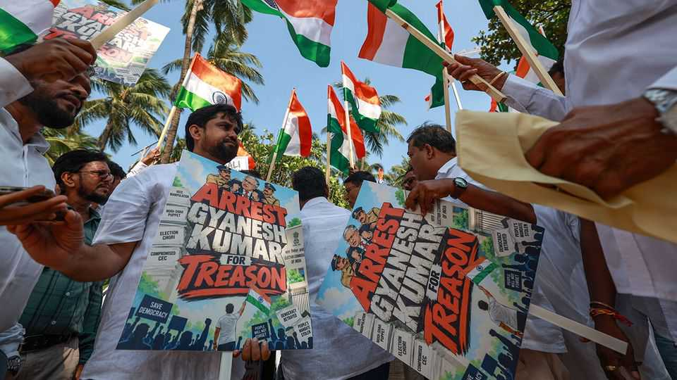

Allegations of bias are rocking India’s electoral watchdog
It is barring tens of millions from voting

Oct 1st 2026
INDIAN ELECTION workers have long braved mountains and tigers to set up polling booths—sometimes for a single voter. In Delhi, a three-person Election Commission has overseen this mission with an official motto: “no voter to be left behind”. Now the current team is wrecking that reputation, S.Y. Quraishi, a former chief election commissioner, tells The Economist. Veterans of the independent watchdog rarely criticise their successors in public. It is rarer still for protesters to take to the streets to demand that one resigns. But that is what happened after the Indian Express, a newspaper, produced explosive complaints from two sitting election commissioners on September 23rd.
Under their chief commissioner, Gyanesh Kumar, they believe the commission has taken “unauthorised” and “illegal” decisions, the newspaper reported. Barely two months after mass student protests forced an education minister to resign, allegations of misconduct are again rocking the government. Protesters and opposition leaders claim the ruling Bharatiya Janata Party (BJP) has brought the watchdog of Indian democracy to heel.
According to the Indian Express, the other two commissioners raised internal objections to the way decisions were pushed through without their agreement. They complained that the commission’s bureaucrats had approved hurdles that made it harder for Indians to prove their right to vote. They also objected to the exclusion of hundreds of thousands of voters that local staff had deemed legitimate. The two commissioners have declined to confirm the reports, but have not repudiated them. The commission has stated that its own decision processes were sound.
Under particular scrutiny is an exercise with a deceptively dull name. Since June 2025 the commission has put most of India through a “special intensive revision” (SIR) of voter rolls; only six states and union territories out of 36 have yet to start. So far, so fair enough: two decades after the last big update, the records are full of dead people, duplicates and outdated entries. But the project has been chaotic—and often rushed through just before state elections, with no time for objections to be heard. With confusion over the documents needed to prove eligibility, some have discovered that passports and the government’s own digital ID are not sufficient without a school-leaving certificate to boot.
The outcome has been mass disfranchisement. The exercise will potentially axe more than 130m names—tens of millions of which will be real voters. Worst off is Delhi, where 55% of voters have been either deleted or given until October 29th to convince the commission otherwise. In one location, a single voter out of 729 survived. By the commission’s own standards, these are strange figures: its guidelines classify a deletion rate of more than 2% as “suspicious”. The commission is promising to look again at the process, but many political analysts call SIR India’s biggest electoral scandal in decades.
Muslims have found themselves particularly vulnerable to deletion. Across India, local BJP figures have shown up with stacks of forms, pushing poll workers to scrap them in batches. Allegations of bias have been loudest in West Bengal—a state the BJP coveted for decades and won in May. There, more than 11% of names vanished. Of the 3.4m Bengalis who appealed, fewer than 0.05% had their cases heard before election day. In the appeals process, tribunals have found that 90% of appellants were valid all along.
One obvious question is whether SIR can swing elections. The evidence for that is muddy. In West Bengal, anti-incumbency alone may have been enough to carry the BJP to victory but seats with many deletions also consistently swung towards the party. The BJP’s loudest regional opponents, chief ministers M.K. Stalin of Tamil Nadu and Mamata Banerjee of West Bengal, each lost their seats with margins that were smaller than the number of voters who had been deleted.
In India, parties of all hues have long flirted with voter fraud. The difference is that in the past the Election Commission has been a fairly stalwart check on their mischief-making. But in 2023 the BJP defied a Supreme Court order and passed a law that in effect lets the government impose its nominees. That has cast doubts over Mr Kumar’s impartiality, since he was appointed under the new rules. Opposition leaders and street protesters are calling for him to be sacked and even prosecuted. Rahul Gandhi, the parliamentary leader of the main opposition Congress party, wants him tried for treason. ■
Stay on top of our India coverage by signing up to Essential India, our free weekly newsletter.